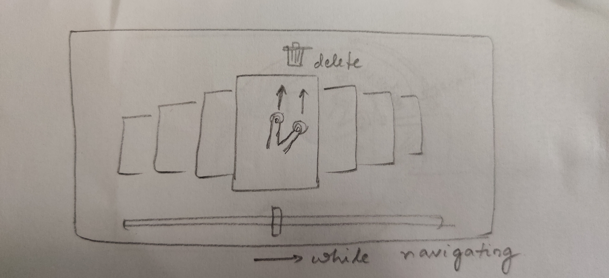
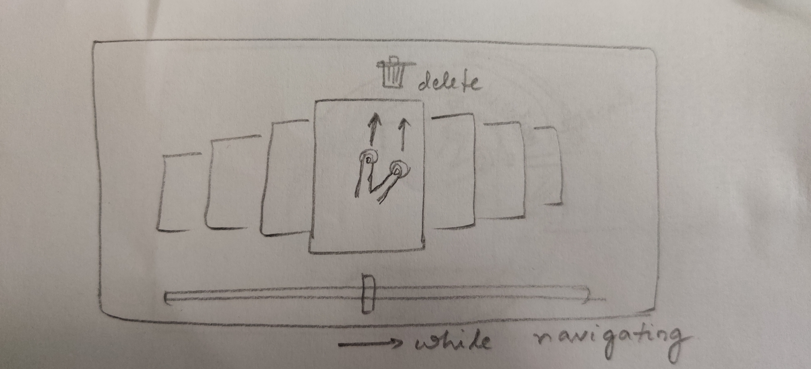
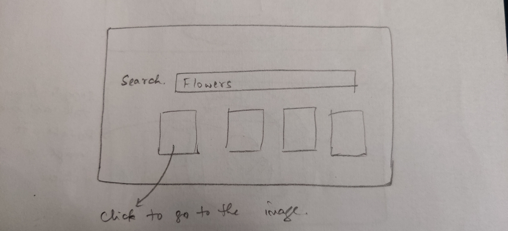
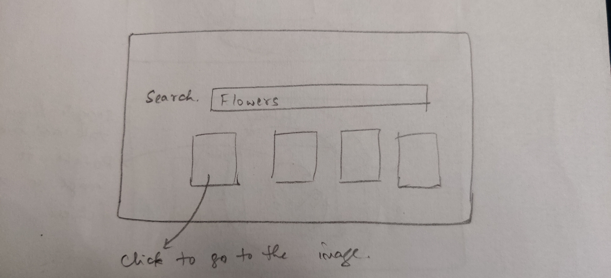

Multi-touch user interfaces (MTUIs) can represent a valuable tool for enhancing human-machine interaction. The inherent variety of hand gestures and the ease of use offer a more direct and intuitive form of interaction that can be exploited in a large spectrum of applications.
There are hundreds and thousands of photos on our mobile devices, browsing through them, organising them and editing them are tasks which have crept into our daily life activities. Our project is a demonstration of how multitouch gestures can be implemented to make interfaces intuitive so that simple tasks like photo browsing and editing can be made quicker. It also illustrates how MTUIs can help perform these tasks in context so that the user does not have to back track his actions to come back to the picture he was looking at.
 

 

The most important and primary learning from this project is that I got to explore and learn the Unity engine and its endless features and C# language.This project gave me an insight into how a multitouch recognizer can be built. We understood some implications of designing and developing the gestures for small screens as opposed to large surface tables. For example, the five finger gesture we had initially proposed in our design for the delete feature, could not be implemented as we realised that such a gesture requires the user to place the five fingers all the time on the screen, but the limited screen space constricts the user.